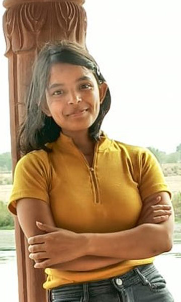

<section class="wrapper-section">
  <div class="container">
    <div class="success-row">
      <div class="success-img">
        
      </div>
      <h2 class="stories-heading">Eram's Story at Jamghat</h2>
      <p>To begin, it must be said that Eram is a name you might come across in the future. Eram’s father abandoned the
        entire family when she was a child including her mother who is mentally ill. Before coming to Jamghat, Eram
        lived with her grandmother (maternal) near Seelampur and while she was there, she was made to do all the
        household chores. Her mother had no proper home and could be found anywhere near Jama Maszid. Eram’s two
        brothers and one elder sister, Uzma had also stayed at Jamghat homes at different points in time. Uzma is now
        her guardian and her brothers are also learning to take bigger responsible.<br><br>

        Eram joined Aanchal home in 2010, she did not know basic alphabets or numbers. The facilitators and educators
        provided her with home tuitions and remedial classes to enable her to get admission into a school. She then went
        on to get admitted in Life Care Academy School in LKG and got promoted within a year. Since then, she never
        looked back and continued to get promoted to the next class because of her hard work. Due to the progress she
        made in her studies, Eram got admission in Ryan International School, South Delhi in the 9th grade. But it was
        not easy for her to compete with the students of Ryan International School. Her classmates were more confident,
        more fluent in the English language and most of them came from well off families. The environment was completely
        different for her and was really challenging. But despite all these difficulties, she did not give up and
        continued working hard. Eram’s perseverance and self-belief made her one of the best students in her class. Eram
        scored 73% marks in the 10th std and got 4th position in the 11th std. She has gone on to score 70% marks in the
        12th std and later continued higher studies and joined college. Her achievements are a reflection of her focus
        and commitment to grow and move forward in life despite all hurdles.<br><br>


        Eram is happy, joyful, understanding and one of the most cooperative children of Aanchal home. She is one of the
        favourite kids among the teachers and Jamghat staff and that’s only because of her genuine and lovely nature.
        She is a very bright child, however, like any other kid she also has issues, she tends to be a little bit too
        serious and gets angry, especially when it comes to matters related to her studies. Academically, she is the
        best performing child, but the best part of all is her inquisitive nature. She wanted to be a police officer
        when she joined Aanchal but as she grew she identified her true interest and now willing to be a company
        secretary and her ultimate life goal is to become a powerful businesswoman.<br><br>

        There is nothing Eram can’t do, be it extracurricular activities or studies or painting. She has been very
        active in theatre activities of Jamghat from time to time and has performed in theatres with well-known actors
        and hundreds of audiences at several places. The other thing she genuinely enjoys is dancing and she took
        professional coaching for it as well, during her stay in Jamghat. She is very good at drawing and paintings as
        well. Talking of sports, Volleyball is her favourite sport, Eram also enjoys playing badminton. She also took
        shooting classes for some time and is NCC ‘A’ certificate holder. Her appearance is also confident and
        attractive.<br><br>

        Eram has now cleared her 12th with 70% marks (CBSE) and after reaching 18 years she passed out from Aanchal Home
        and for her overall development and as aftercare support, she was transferred to Aftercare home of SPID so that
        she could continue her education as at that time there was no one in her family who could support her. Jamghat
        was continuously in her contact and guided her to register in Delhi University, Jamia university and IPU for her
        graduations. She was able to get admission in KCC College- IP University, and has successfully cleared her 2nd
        year of B. Com. (Hons.). Now that her elder sister and brother, who also stayed in Jamghat’s Aanchal and Aman
        home are earning well, they have rented a place and finally Eram has reunited with her siblings. Her youngest
        brother who also lived in Aman home passed out from Aman home a few months back and now all four siblings are
        living as a family together.<br>

        With the attitude and aptitude she possesses and her inquisitive nature we are assured of her bright future.
      </p>

    </div>
  </div>
</section>